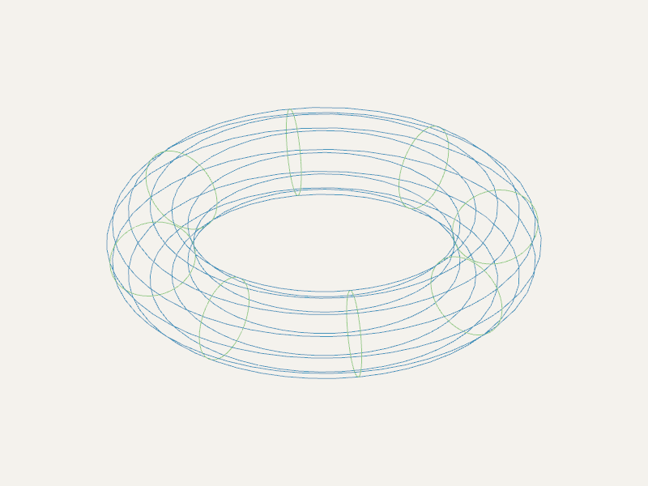

Sweep operations
A broad family of geometry operations constructs a body by sweeping a profile or a series of profiles (profile, profiles) along a path (spine).
What a sweep describes
A sweep builds a surface by moving a profile along a path. The profile may vary according to a rule. This leaves two things to define:
- The shape of the path.
- How the profile varies.
The second can be split into two rules:
- How the profile's shape varies.
- How its coordinate frame rotates.
The different sweep operations provide different ways of specifying these rules.
Linear extrusion
A common way to give a planar object volume. The operation sweeps face along vec. A single number in place of the vector extrudes the model along the positive Z direction.
With center set, the result is translated back by half of vec.
Signature:
extrude(face, (x,y,z), center=False)
extrude(face, z, center=False) #equal: vec=(0,0,z)
face.extrude(vec) #alternate
Example:
ngon(r=10, n=10)
ngon(r=10, n=10).extrude(4)
extrude(ngon(r=10, n=10), (1, 0, 4))
register_font(FONTPATH)
extrude(textshape(text="TextShape", fontname=FONTNAME, size=100), 20)


Tube
A circular profile can be swept along a path with pipe_shell. Subtract two sweeps to obtain a hollow tube. Place the profile at the start of the path, perpendicular to its initial direction.
from zencad import *
spine = interpolate(
points([(0, 0, 0), (0, 0, 35), (20, 0, 55), (45, 15, 65)]),
tangs=[vector3(0, 0, 1), None, None, vector3(1, 1, 0)],
)
outer = pipe_shell([circle(3, wire=True)], spine, frenet=True)
inner = pipe_shell([circle(2, wire=True)], spine, frenet=True)
body = outer - inner
body.assert_valid()
disp(body)


Sweeping a profile or a varying series of profiles
Builds a body from one profile or a sequence of profiles swept along spine. Setting frenet orients the profile according to the Frenet–Serret frame. binormal selects orientation using a constant binormal.
Signature:
pipe_shell(profiles, spine, frenet=False, binormal=None, solid=True)
Examples:
spine = segment((0, 0, 0), (0, 0, 40))
profiles = [circle(10, wire=True), circle(5, wire=True).up(40)]
body = pipe_shell(profiles, spine)


Revolution
Creates a body of revolution from proto. Set yaw to create a sector. If r is given, the profile is first rotated 90 degrees around X and shifted along X by r.
Signature:
revol(profile, r=None, yaw=deg(360))
Example:
profile = rectangle(5, 12).rotateX(deg(90)).right(15)
body = revol(profile)
sector = revol(profile, yaw=deg(120))


Extended revolution
An extended version of revol. Builds a body of revolution over the angular interval yaw. roll changes the profile's rotation along that interval. The body is constructed from n reference copies of the profile; parts sets the number of segments in the resulting body.
Signature:
revol2(profile, r, n=30, yaw=(0,deg(360)), roll=(0,0), parts=None)
Example:
revol2(profile=square(10, center=True), r=20, n=60, yaw=(0,deg(360)), roll=(0,deg(360)))

Result types
extrude() and revol() return Shape; extract a single solid with result.solids().only(). pipe_shell(..., solid=True) returns Solid and requires closed profiles; an open profile raises ValueError on evaluation, identifying its index. With solid=False, it returns Shell and accepts open profiles. revol2() with the example parameters returns Solid.
Parametric surface: sweep_surface
sweep_surface(section, spine) sweeps a profile curve along a path curve and returns Surface. This is a surface for further construction and measurement; use pipe_shell for a finished solid.
Here, a circle of radius 3 moves along a circle of radius 12. The surface is shown as a grid of isocurves:
from zencad import *
surface = sweep_surface(circle_curve(3), circle_curve(12))
u = surface.u_range()
v = surface.v_range()
for i in range(12):
value = u.lower + (u.upper - u.lower) * i / 12
display(surface.u_iso(value).edge(v)).set_color(blue, wire_color=blue)
for i in range(8):
value = v.lower + (v.upper - v.lower) * i / 8
display(surface.v_iso(value).edge(u)).set_color(green, wire_color=green)
show()

scale scales the profile. trihedron controls its orientation along the path: the default is SweepTrihedron.CORRECTED_FRENET; SweepTrihedron.FRENET is also available.